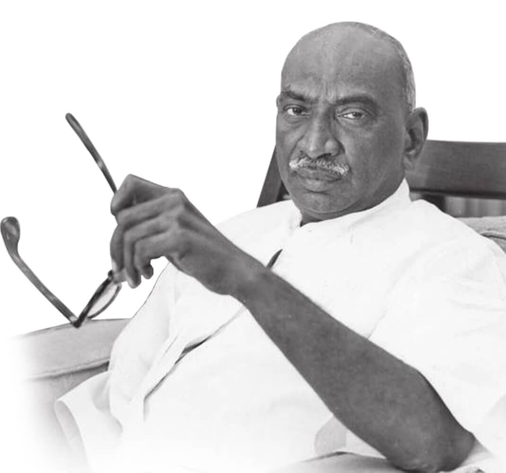

Photo of Great Political Leader K kamaraj
Timle line of a K Kamaraj life:
- 1903 Born in Virudhunagar, Tamil Nadu, India
- 1907 Kamaraj enrolled at a traditional school. The following year, he enrolled at the Yenadhi Narayana Vidhya Salai but after a year of studies he shifted to Virudupatti High School
- 1914 when he was merely six. His father died and his mother was forced to support her family. To help his mother, Kamaraj dropped out of school and to support his family
- 1919 Jallianwala Bagh Massacre was a turning point in Kamaraj’s life. The killing of innocent people instigated a rage of fury and vehemence in Kamaraj who decided to work actively in India’s struggle for freedom and bring an end to British Raj.
- 1920 He joined Congress as a full time worker. He actively worked as political campaigner, organizing public meetings and carrying the Congress propaganda.
- 1936 Kamaraj’s guru Satyamurti was elected President of the Provincial Congress. The latter appointed Kamaraj as the General Secretary. Four years later, the duo swapped positions strengthening the party base through their leadership skills.
- 1942 He attended the All India Congress Meet in Bombay where Gandhi’s Quit India Movement bore its roots. He spread the propaganda material to Trichy, Tanjore, Ranipet and Madurai.
- 1947 K Kamaraj was elected a member of the Working Committee of the Congress.
- 1951 He contested and won a seat in the elections to the first Lok Sabha.
- 1954 K Kamaraj was elected as the Chief Minister of the Madras State. Education was the primary focus of Kamaraj’s Government but he did not overlook other sectors. In fact, he came up with major irrigation schemes that led to the building of dams and canals. Farmers were given facilities and subsidized loans. He also administered the setting up of major industries under his governance such as Neyveli Lignite Corporation, BHEL, Manali Oil Refinery.
- 1957 & 1962 Kamaraj’s excellence as a leader and administrator was evident from the fact that he remained the Chief Minister of the State for three consecutive terms, being re-elected. Under his administration, Nehru claimed Madras to be the ‘best administered state in India’
- 1963 He resigned from his post of the Chief Minister to serve a greater purpose
- 1964 K Kamaraj was elected the President of the All India Congress. During his term as the President, he successfully steered the nation through the stormy years post Nehru’s death. He refused to take up Prime Ministerial office twice, giving it to Lal Bahadur Shastri and Indira Gandhi in 1964 and 1966 respectively.
- 1969 During the split of Congress, Kamaraj became the leader of the Indian National Congress (Organisation) in Tamil Nadu. However, in 1971 the party failed miserably but he retained his position until his death in 1975.
Personal Life & Legacy
- 1975 Kamaraj breathed his last on October 2, 1975 in his sleep. He was 72 years of age
- 1976 Posthumously, Kamaraj was bestowed with the nation’s highest civilian honour, the Bharat Ratna
- He was proclaimed with the title of Kalvi Thanthai or Father of Education in Tamil Nadu.
- Chennai airport named its domestic terminal ‘Kamaraj Terminal’
- To honor Kamaraj’s contribution in Indian politics and governance such as Chennai's beach road which bears the name ‘Kamarajar Salai’. Bangalore's North Parade Road and Parliament road in New Delhi were renamed ‘K. Kamaraj Road’.
- A university in Madurai was inaugurated under his name, Madurai Kamaraj University, honouring his educational policies as the CM of Madras.